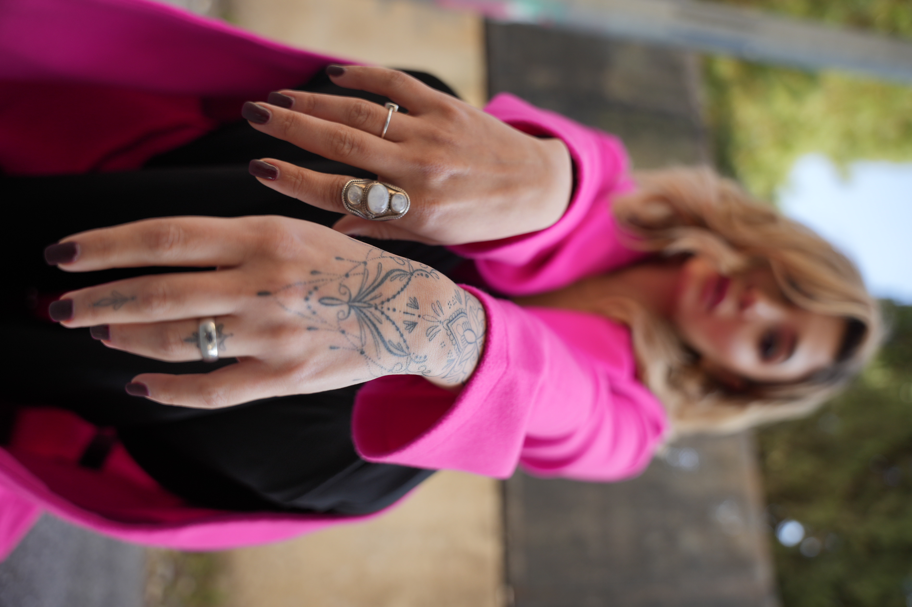

VISUAL ARTIST
VISUAL ARTIST
Daniella
Husam

Contemporary visual artist · Multidisciplinary practice
Scroll to discover
A multidisciplinary visual artist and art educator exploring colour, identity, emotion and the surreal through painting, mixed media and material experimentation.
Collect · Discover · Own
Art to live with.
Stories to keep.
Explore and collect selected works, with some pieces also available as digital prints.
Purchase art on Mostra